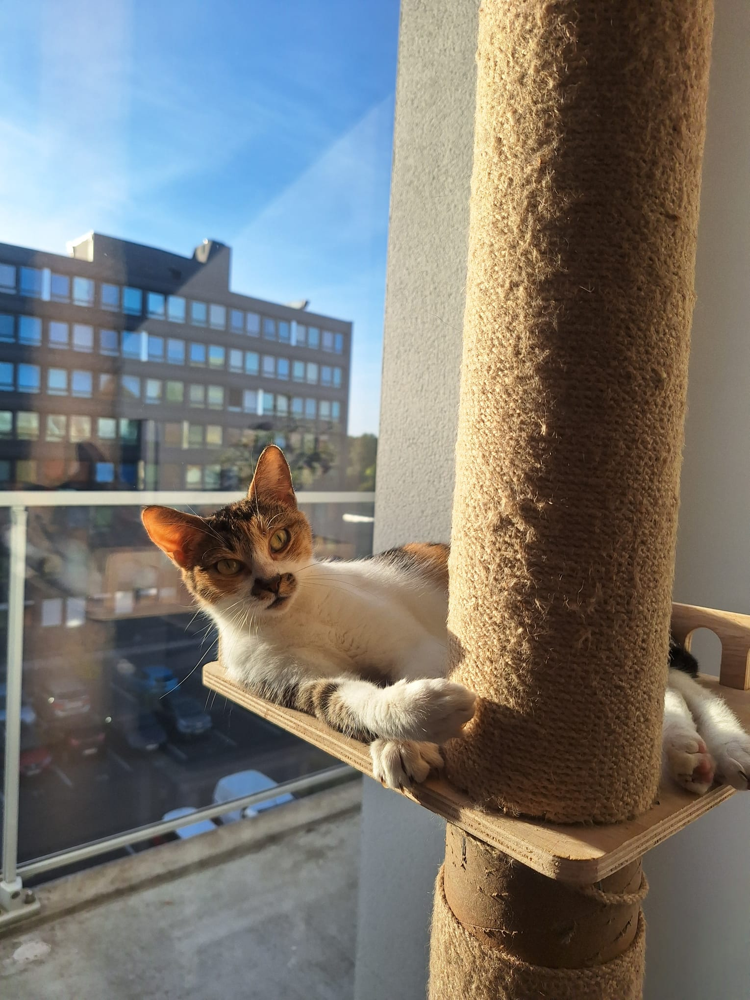
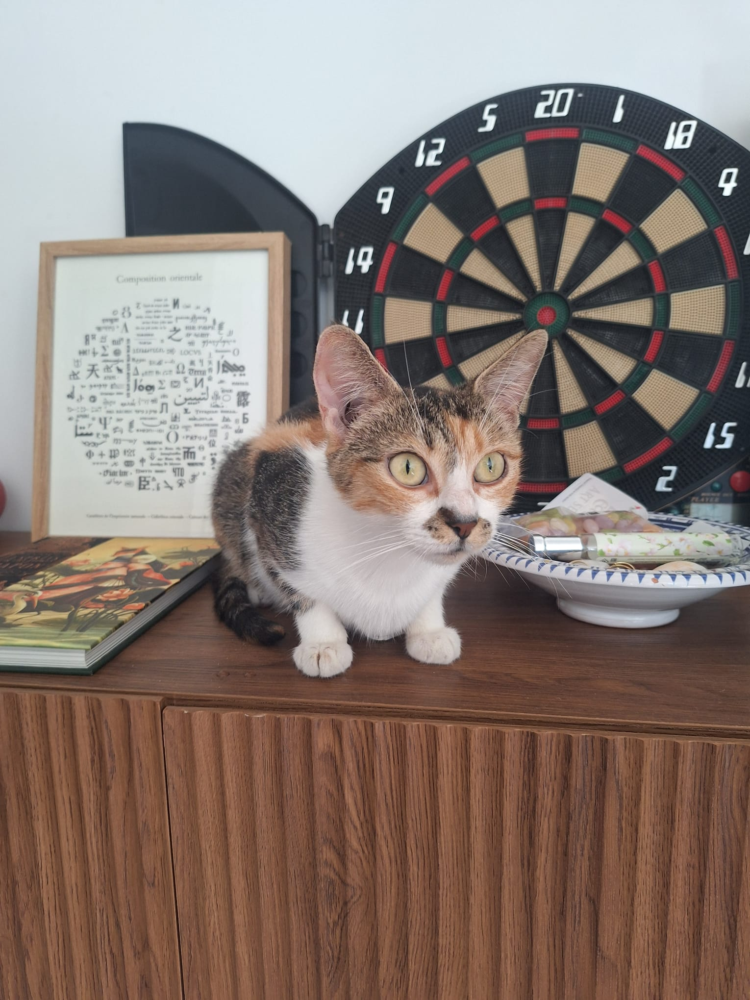
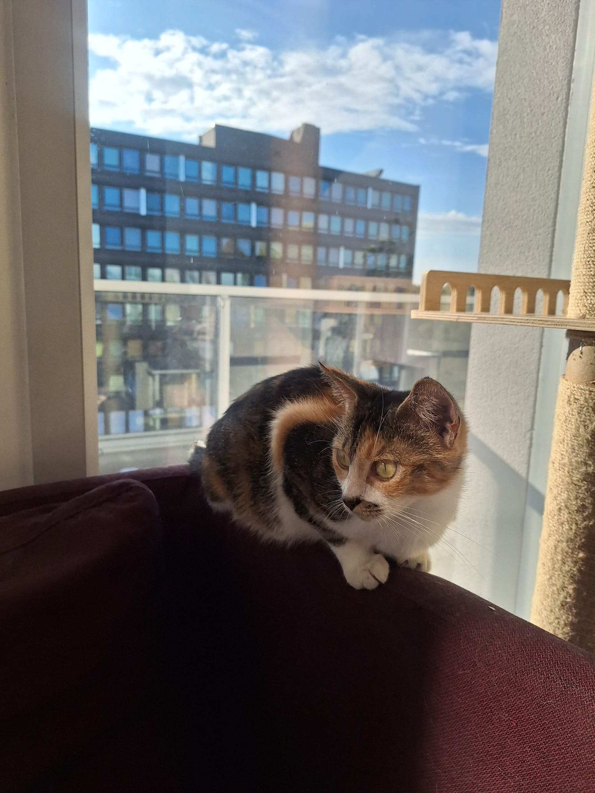
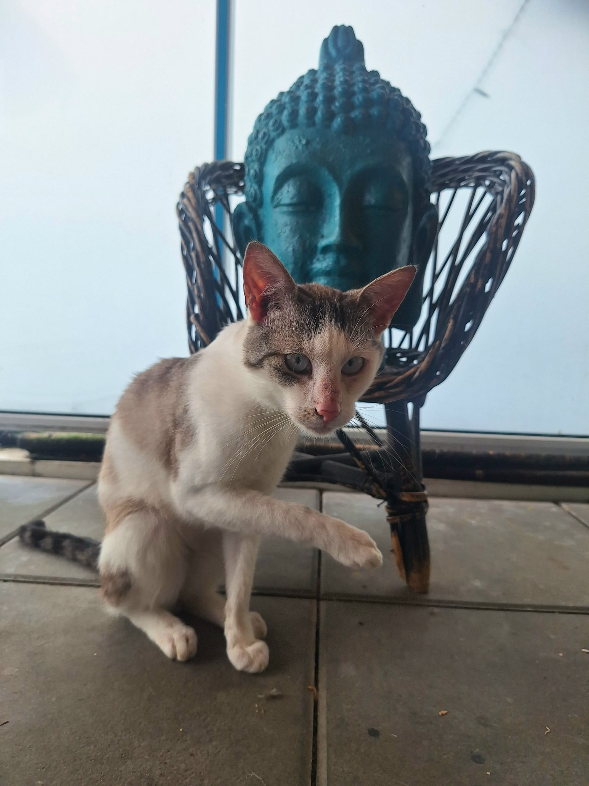
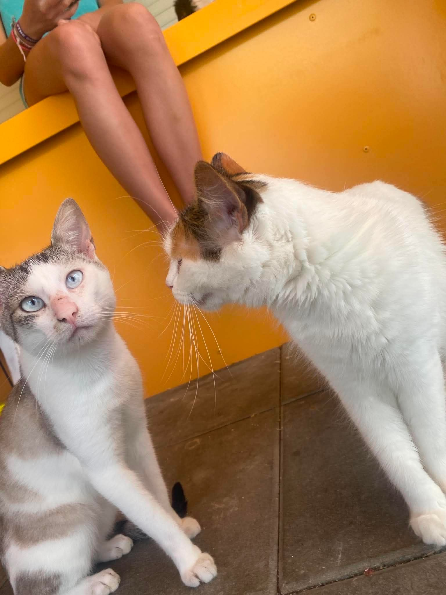

Nos protégés

Clochette
11 ans · Stérilisée et identifiée
Secteur Saint-André-lez-Lille
Clochette a beau avoir 11 ans, elle déborde d'énergie et de joie de vivre ! Sociable, affectueuse et très joueuse, elle adore les caresses. Elle est OK enfants, OK chiens et OK chats.



Pema-Fany
Née le 1er mars 2025 · Testée négative FIV/FELV
Stérilisée le 1er septembre 2026
Recueillie en juin 2026, Pema-Fany a eu besoin de quelques soins (conjonctivite, teigne) avant de se refaire une santé. Aujourd'hui remise sur pied, c'est une jeune chatte douce et curieuse, encore un peu timide avec les inconnus mais très attachante une fois en confiance.



Pilou-Lolita
1 an et demi · Castré et identifié
OK chats, chiens, lapins et enfants
Pilou-Lolita est un chat très affectueux qui adore rester proche de l'homme. Sociable avec les autres animaux comme avec les enfants, il s'adaptera facilement à une famille déjà bien occupée.


